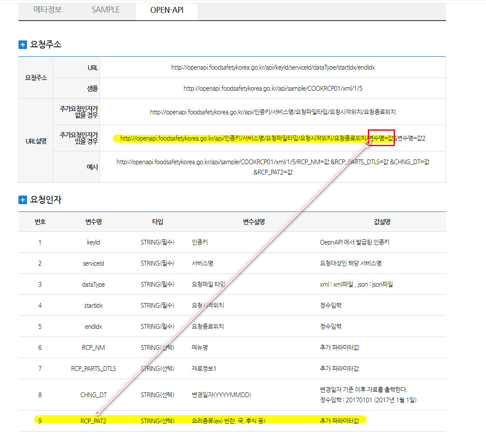
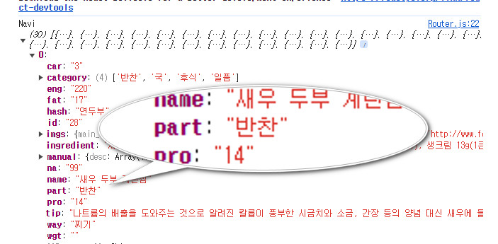
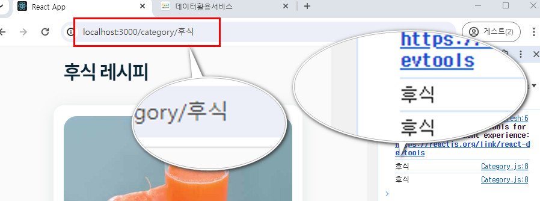
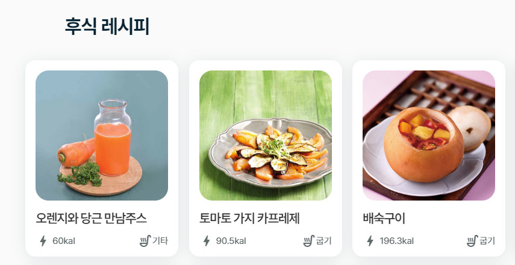
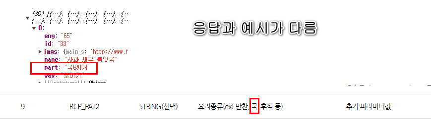
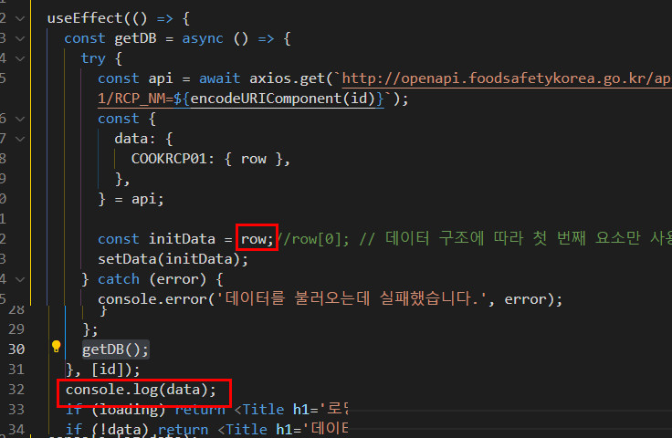
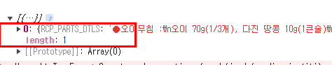

#
레시피앱-12-기능추가
#
목차
1. App 의 구조 2. Router 설정하기 2.1. Router 컴포넌트 내에 Navigate 컴포넌트 작성하기
3. Category 컴포넌트 작성 3.1. useParams 사용
4. 상세정보 컴포넌트 만들기 4.1. 동적라우터 작성 4.2. 컴포넌트 작성 4.2.1. DetailApi.js 4.2.2. Detail 컴포넌트 작성
#
1. App 의 구조
src/
├─── App.js
├─── common.scss
└─── scss/ (partial 파일들)
│ │
│ ├─── _init.scss (변수,믹스인 등 초기값 정의)
│ ├─── _layout.scss (레이아웃 정의)
│ ├─── _typo.scss (폰트정의 )
│ └─── _util.scss (기타 요소정의)
│
├─── components/ (UI요소를 리턴하는 컴포넌트파일)
│ │
│ ├─── Home.js 메인컴포넌트
│ ├─── Category.js 동적으로 카테고리 경로를 할당받을 컴포넌트
│ ├─── List.js 리스팅컴포넌트
│ ├─── Title.js 제목컴포넌트
│ └─── DetailApi.js api 서버와 통신하여 상세정보 데이터 전달
│ └─── Detail.js 상세정보 컴포넌트
│
└─── routes / (라우팅 설정 파일)
│ │
│ └─── Router.js 라우터와 링크설정
│
└─── context / (전역데이터 설정)
│
└─── RecipeContext.js (전역저장소 설치)- 위의 구조도에 맞게 파일과 폴더를 구성한다.
- 각 파일의 쓰임새에 맞는 코드를 작성한다.
- 이번 강좌는 리액트언어에 촛점을 맞출 것이므로 스타일링하는 scss 파일을 아래의 링크에서 내려받아 압축을 푼 후 각각 파일위치를 구조도를 참조하여 이동한다.
scss파일
#
2. Router 설정하기
#
2.1. Router 컴포넌트 내에 Navigate 컴포넌트 작성하기
Navigate 컴포넌트는 gnb 역할을 할것이다.
Home과 각 카테고리로 이동하는 링크를 작성한다.
기존의 Anchor 컴포넌트는 삭제하고 Navigate 컴포넌트를 생성한다.
Navigate 컴포넌트의 카테고리 정보는 useContext 를 활용한다.
import { RecipeContext } from '../context/RecipeContext'; ... const Navigate = () => { const data = useContext(RecipeContext); }; export { Router, Navigate };Navite 시안을 참고하자
5개의 Link 를 가지며 4개는 카테고리 정보이다. 카테고리 정보는 App컴포넌트의 전역 데이터의 해당 값을 참조하도록 한다. 카테고리 값 참조시 동적라우팅을 사용하여 해당 카테고리 데이터를 받아야 하므로 api 서버에서 제공하는 카테고리 정보를 가공해야 한다.
식품안전나라의 api문서를 확인해보면 RCP_PAT2 변수에 요리종류가 반환되며 사용시 URL 설명의 예시처럼 작성하라는 안내가 있다.

Navigate 컴포넌트로 전달되는 데이터의 구조를 확인한다
const Navigate = () => { const data = useContext(RecipeContext); console.log("Navi",data);
30개의 배열의 각각 객체데이터가 존재하며 하위 키 part 에 RCP_PAT2 에 해당하는 데이터가 들어있다.
30개의 데이터 내에서 part 의 값만을 추출한후 중복을 삭제하는 가공작업이 필요하다.
이렇게 가공한 데이터를 각각 Link 컴포넌트로 전달한다.배열을 펼쳐서 원하는 속성만 추출후 중복값 삭제
const uniquePart = [...new Set(data.flatMap((el) => el.part))];Link 컴포넌트 작성
return ( <div className='gnb'> <div className='inner'> <div className='menu'> <Link to={'/'}>홈화면</Link> {uniquePart.map((el, idx) => { return ( <Link key={idx} to={`/category/${el}`}> {el} </Link> ); })} </div> </div> </div> );동적라우터 설정
import Category from '../components/Category'; ... const Router = () => { return ( <> <Navigate /> <Routes> <Route path='/' element={<Home />} /> <Route path='/category/:id' element={<Category />} /> </Routes> </> ); };
#
3. Category 컴포넌트 작성
#
3.1. useParams 사용
src\components\Category.js 를 함수형 컴포넌트로 생성한다.
url로 데이터를 전달받을수 있도록
react-router-dom의useParams모듈을 임포트 한다.import { useParams } from 'react-router-dom'; const CategoryPage = () => { const { id } = useParams(); console.log(id); return <div className='inner'>${id}</div>; }; export default CategoryPage;
url의 파라미터가 전달되며 Category 컴포넌트의 데이터가 동적으로 렌더링 되는지 확인한다.이 컴포넌트는 전역데이터를 사용할수 없다.
지금 받은 id 변수를 사용하여 api 서버에서 요리종류별 데이터를 요청 해야하기 때문이다.
컴포넌트 내부에서 직접 api 서버와 통신 하는 로직을 작성한다.... import { useEffect, useState } from 'react'; //데이터 수신후 컴포넌트를 리렌더 해야하므로 useState 를 임포트 하고 데이터 변경시에만 리렌더를 해야하므로 useEffect 를 임포트 한다. import axios from 'axios'; //axios 임포트 import Title from './Title'; import List from './List'; //받아온 데이터는 List 컴포넌트로 전달하여 렌더링 한다. const CategoryPage = () => { const { id } = useParams(); const [loading, setLoading] = useState(true); //데이터 수신상태를 관리하여 사용자에게 피드백을 전달한다. const [data, setData] = useState([]);//컴포넌트는 처음에 빈 데이터를 갖고 있다 api 통신 성공시 해당 데이터를 렌더할수 있는 상태가 된다. useEffect(()=>{ //데이터를 가져오는 로직을 작성한다. },[]) ... return ( //화면에 데이터를 렌더링하는 로직을 작성한다. ) }App 컴포넌트의
getDB함수는 서버로 부터 데이터를 요청하여 전달받으면 새 변수에 할당하는 로직이 있으므로 해당 함수를 복사붙여넣기 한다.카테고리 페이지는 아래와 같은 데이터를 출력할 것 이므로 필요없는 데이터는 삭제한다.

useEffect(() => { const getDB = async () => { try { const { data } = await axios.get(`http://openapi.foodsafetykorea.go.kr/api/08cc9b42270a4439b1b5/COOKRCP01/json/1/30/RCP_PAT2=${id}`); const { COOKRCP01: { row }, } = data; const initData = row.map(({ RCP_SEQ, RCP_NM, RCP_WAY2, RCP_PAT2, INFO_ENG, ATT_FILE_NO_MAIN, ATT_FILE_NO_MK }) => ({ id: RCP_SEQ, name: RCP_NM, eng: INFO_ENG, way: RCP_WAY2, part: RCP_PAT2, imgs: { main_s: ATT_FILE_NO_MAIN, main_l: ATT_FILE_NO_MK }, })); setData(initData); } catch (error) { console.error('데이터를 불러오는데 실패했습니다.', error); } finally { setLoading(false); } }; getDB(); }, [id]);국&찌개 는 데이터를 불러우는데 실패한다. 원인을 알아보자

응답데이터와 요청데이터가 다르다.
요청시국으로 전달해야 응답을 받을수 있다.
국&찌개를 국으로 변경한다.let { id } = useParams(); if (id === '국&찌개') { id = '국'; } ... return ( <div className='inner'> {loading ? ( <Title h1='로딩중입니다.' /> ) : ( <> {id === '국' ? <Title h2={`${id}&찌개 레시피`} /> : <Title h2={`${id} 레시피`} />} <div className='list'> <List items={data} /> </div> </> )} </div> );
#
4. 상세정보 컴포넌트 만들기
#
4.1. 동적라우터 작성
import DetailApi from '../components/DetailApi';
...
const Router = () => {
return (
...
<Route path='/detail/:id' element={<DetailApi />} />
...
#
4.2. 컴포넌트 작성
#
4.2.1. DetailApi.js
DetailApi 컴포넌트는 라우터에서 전달하는 파라미터를 전달받아 Page 서버로 요청한다.
그후 응답결과를 우리 데이터 구조에 맞게 가공한다.
- DetailApi 컴포넌트 생성후 작성
import { useEffect, useState } from 'react';
import { useParams } from 'react-router-dom';
import axios from 'axios';
import Title from './Title';
import Detail from './Detail';
const DetailApi = () => {
const { id } = useParams(); // URL에서 id 가져오기
const [loading, setLoading] = useState(true);
const [data, setData] = useState(null);
useEffect(() => {
const getDB = async () => {
try {
const api = await axios.get(`http://openapi.foodsafetykorea.go.kr/api/08cc9b42270a4439b1b5/COOKRCP01/json/1/1/RCP_NM=${encodeURIComponent(id)}`);
const {
data: {
COOKRCP01: { row },
},
} = api;
const initData = row[0]; // 데이터 구조에 따라 첫 번째 요소만 사용
setData(initData);
} catch (error) {
console.error('데이터를 불러오는데 실패했습니다.', error);
} finally {
setLoading(false);
}
};
getDB();
}, [id]);
if (loading) return <Title h1='로딩중입니다.' />;
if (!data) return <Title h1='데이터가 없습니다.' />;
return <Detail data={data} />;
};
export default DetailApi;라인별 코드설명
DetailApi 컴포넌트는 Category 와 마찬가지로 파라미터를 전달받아 api서버로 해당 데이터를 요청하고
응답이 오면 우리의 데이터 구조에 맞게 가공하여 컴포넌트로 전달하는 역할을 한다.
- 1: 응답데이터에 따라 컴포넌트의 상태를 관리해야 하므로 useState와 useEffect 를 임포트
- 2: url을 통해 데이터를 전달받아야 하므로 useParams 임포트
- 3: api 서버로 2번의 데이터를 요청해야 하므로 axios 임포트
- 4: 응답받은 데이터를 내려줄 컴포넌트 (Title, Detail) 임포트
- 7: 컴포넌트 함수
- 8: url을 통해 전달받은 데이터를 id 변수에 구조분해할당함 (useParams 변수는 객체형으로 전달되므로 직접 꺼낼수 없다)
- 9: 컴포넌트가 로딩상태인지를 관리할 변수. 로딩중 일 경우 사용자에게 메시지를 전달한다.
- 10: 최초 렌더시에는 빈 데이터 이었다가 서버와 통신후 응답받은 데이터로 상태를 관리할 변수
- 12: id 변수의 값이 변경시에만 컴포넌트를 리렌더 하기 위한 HOOK
- 13:
getDB함수는 api 서버와 통신해야 하므로 비동기동작을 지원하는async~await을 사용한다. - 14:
try블록은 api 서버로 데이터를 요청하는 로직을 갖고 있다. - 15:
api변수는axio에서 제공하는.get()함수를 사용하여 서버로 데이터 요청을 한다. 이때 서버의 응답시간이 지연될수도 있기 때문에await키워드를 사용하여 비동기로 요청한다.
또한 데이터의 요청은 url의 파라미터 를 전달하는 방식으로 이루어지며 이때 파라미터는 8번라인의 id 변수이다.
id변수의 값은 한글을 포함하고 있어 서버데이터를 찾을때 혼선이 생길수 있으므로encodeURIComponent()함수를 사용하여 한글,특수문자 포함시 인코딩하여 요청한다. - 16~19: api 변수에 할당된 값을 구조분해 할당하여 재구성 한다.
- 21: data 변수에 할당된 데이터의 구조를 살펴보기 위해 잠시 코드를 아래처럼 수정한다.

화면의 오류는 무시하고 콘솔창의 반환값만 확인한다.

배열에 포함된 객체가 반환되며 배열의 인덱스번호 0이 확인된다.
데이터를 쉽게 꺼내 쓰기 위해initData변수에 값을 구조분해할당 한다.
코드를 다시 아래와 같이 수정하고 콘솔명령어는 삭제한다.
const initData = row[0]; - 22: data 상태업데이트 함수인
setData의 인자로initData를 전달한다.- data 변수는 빈 배열이었다가 setData 함수의 매개변수 initData의 값이 재할당된다.
- 23: catch 블록은 오류발생시 콘솔화면에 에러메시지를 출력한다.
- 25: finally 블록은 try 블록으로 진입하면 실행된다. 즉 try 에서 통신요청후 응답을 받아 데이터 구조를 변경하면 컴포넌트의 로딩상태를 false 로 업데이트 한다.
- 29:
getDB함수를 실행한다. - 30: useEffect 의 인자로 id 변수의 값의 업데이트 시에만 useEffect 내 실행문을 실행한다.
- 32: loading 변수의 값이 true 일 경우 화면에 로딩중 메시지를 출력하여 사용자경험을 개선한다.
- 33: data 변수의 값이 비었을 경우 데이터없음 메시지를 전달하여 사용자 경험을 개선한다.
- 35: Detail 컴포넌트를 반환하고 data props 로 변수 data 를 전달한다.
#
4.2.2. Detail 컴포넌트 작성
Detail 컴포넌트는 DetailApi 컴포넌트가 전달하는 데이터를 ui요소에 할당하는 역할을 한다.
import Title from './Title';
const Detail = (props) => {
const { ATT_FILE_NO_MK, INFO_CAR, INFO_ENG, INFO_FAT, INFO_NA, INFO_PRO, MANUAL01, MANUAL02, MANUAL03, MANUAL04, MANUAL05, MANUAL06, MANUAL07, MANUAL08, MANUAL09, MANUAL10, MANUAL11, MANUAL12, MANUAL13, MANUAL14, MANUAL15, MANUAL16, MANUAL17, MANUAL18, MANUAL19, MANUAL20, MANUAL_IMG01, MANUAL_IMG02, MANUAL_IMG03, MANUAL_IMG04, MANUAL_IMG05, MANUAL_IMG06, MANUAL_IMG07, MANUAL_IMG08, MANUAL_IMG09, MANUAL_IMG10, MANUAL_IMG11, MANUAL_IMG12, MANUAL_IMG13, MANUAL_IMG14, MANUAL_IMG15, MANUAL_IMG16, MANUAL_IMG17, MANUAL_IMG18, MANUAL_IMG19, MANUAL_IMG20, RCP_NA_TIP, RCP_NM, RCP_PARTS_DTLS } = props.data;
const manuals = [
{ desc: MANUAL01, img: MANUAL_IMG01 },
{ desc: MANUAL02, img: MANUAL_IMG02 },
{ desc: MANUAL03, img: MANUAL_IMG03 },
{ desc: MANUAL04, img: MANUAL_IMG04 },
{ desc: MANUAL05, img: MANUAL_IMG05 },
{ desc: MANUAL06, img: MANUAL_IMG06 },
{ desc: MANUAL07, img: MANUAL_IMG07 },
{ desc: MANUAL08, img: MANUAL_IMG08 },
{ desc: MANUAL09, img: MANUAL_IMG09 },
{ desc: MANUAL10, img: MANUAL_IMG10 },
{ desc: MANUAL11, img: MANUAL_IMG11 },
{ desc: MANUAL12, img: MANUAL_IMG12 },
{ desc: MANUAL13, img: MANUAL_IMG13 },
{ desc: MANUAL14, img: MANUAL_IMG14 },
{ desc: MANUAL15, img: MANUAL_IMG15 },
{ desc: MANUAL16, img: MANUAL_IMG16 },
{ desc: MANUAL17, img: MANUAL_IMG17 },
{ desc: MANUAL18, img: MANUAL_IMG18 },
{ desc: MANUAL19, img: MANUAL_IMG19 },
{ desc: MANUAL20, img: MANUAL_IMG20 },
];
const source = RCP_PARTS_DTLS.split('●')
.map((el) =>
el
.split(':')
.map((el) => el.trim())
.filter(Boolean)
)
.filter((el) => el.length);
return (
<>
<div className='detail'>
<img className='detail_mainimg' src={ATT_FILE_NO_MK} alt={RCP_NM} />
<Title h1={RCP_NM} />
<div className='detail_info'>
<Title h3='재료' />
{source.map((el, idx) => {
return (
<div className='txt' key={idx}>
<span className='title'>{el[0]}</span>
<span className='content'>{el[1]}</span>
</div>
);
})}
</div>
<div className='detail_info'>
<Title h3='조리 방법' />
{manuals.map((manual, index) =>
manual.desc ? (
<div className='desc_list' key={index}>
<span className='txt'>{manual.desc.slice(0, -1)}</span>
<img src={manual.img} alt={RCP_NM} />
</div>
) : null
)}
</div>
<div className='detail_info'>
<Title h3='영양정보' />
<div className='table'>
<div className='row'>
<span className='col'>열 량:</span> <span className='col'>{INFO_ENG} kal</span>
</div>
<div className='row'>
<span className='col'>탄 수 화 물:</span> <span className='col'>{INFO_CAR} g</span>
</div>
<div className='row'>
<span className='col'>단 백 질:</span> <span className='col'>{INFO_PRO} g</span>
</div>
<div className='row'>
<span className='col'>지 방:</span> <span className='col'>{INFO_FAT} g</span>
</div>
<div className='row'>
<span className='col'>나 트 륨:</span> <span className='col'>{INFO_NA} g</span>
</div>
<div className='tip'>
<span className='col'>저감 조리법 TIP:</span> <span className='col'>{RCP_NA_TIP}</span>
</div>
</div>
</div>
</div>
</>
);
};
export default Detail;Detail 컴포넌트는 DetailApi 컴포넌트가 서버와 통신한 데이터를 props 로 전달받고
우리의 UI 구조에 맞게 삽입하여 렌더링하는 역할을 한다.
- 1: Title 컴포넌트 임포트
- 2: props로 상위컴포넌트의 데이터를 내려 받는다
- 4: 전달받을 props 를 Detail 컴포넌트에 내에서 꺼내기 쉽게 데이터를 구조분해 할당한다.
Category컴포넌트는 Navigate 컴포넌트에서 전달하는 parameter를 url로 전달받아 동적으로 카테고리 정보를 렌더링 하는 역할을 한다.